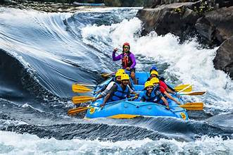
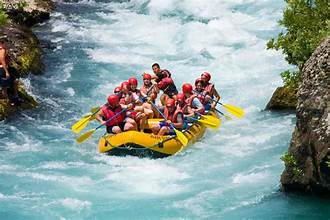
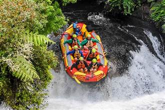

The Bing Bing Crazy Frog River is a thrilling, fast-flowing waterway known for its intense rapids and breathtaking canyon scenery. Carving through rugged cliffs and dense forests, the river offers an exhilarating mix of sharp turns, powerful waves, and heart-pounding drops. Its three main rapid sections—A, B, and C—each present unique challenges, from technical maneuvers to endurance-testing whitewater and a final dramatic plunge. Between the rapids, calmer stretches provide a chance to take in the stunning natural surroundings and catch a breath before the next surge. Whether you're a seasoned adventurer or a first-time rafter, the Bing Bing Crazy Frog River promises an unforgettable ride filled with adrenaline and awe-inspiring beauty.
Section A - The Thundering Gateway
The journey kicks off with Section A, a fast and bouncy introduction to the river’s power. Narrow channels and sharp turns create an exhilarating ride, with waves crashing over the raft as paddlers navigate through the frothing whitewater. This section is a warm-up for what’s to come, testing teamwork and setting the pace for the adventure ahead.
Section B - The Endless Surge
As the longest stretch of rapids on the route, Section B delivers non-stop action. The river carves through a deep canyon, creating a relentless series of waves and churning holes that keep paddlers on high alert. This stretch is all about endurance and focus, with only a few brief calm spots to catch a breath before the next surge of rushing water.
Section C - The Final Plunge
Saving the biggest thrill for last, Section C features the river’s largest drop—a heart-pounding descent that sends rafts plunging into a roaring pool below. This section demands precise maneuvering as paddlers navigate around jagged boulders before the final, dramatic plunge. It’s an unforgettable ending to the adventure, leaving riders soaked, exhilarated, and eager to do it all again.
